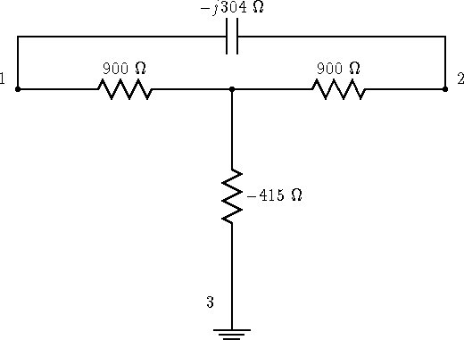
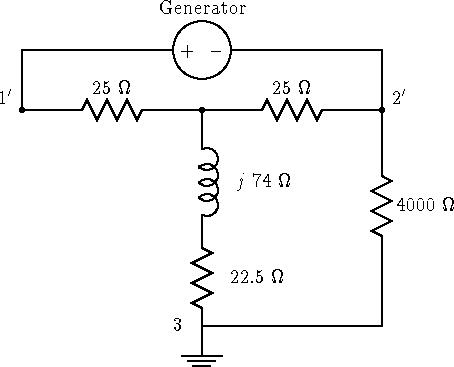

Let me analyze a simple case of a perfect quarter wave balanced line with a 300 ohm characteristic impedance terminated in a 50 ohm resistor. The line goes vertically straight up and the ground is assumed perfectly conducting. The reason for all of these assumptions is so I can make simple estimates of what the impedances are. The situation I am modeling is the case where the input to the feedline has a small common mode impedance, and a large differential mode impedance.
ZD = 3002/50 or 1800 ohms resistive. ZC will be the impedance of a quarter wave vertical driven against ground or about 35 ohms resistive. Z1 = Z2 = 900 ohms, Z3 = -415 ohms, where the labeling is given in figure 4.
Now lets hook up our ferrite bead balun by connecting the
shield of the coax to terminal 2 and the center conductor to 1.
A large ferrite bead balun will introduce an impedance of around
|ZBal| = 6000 ohms from point 2 to ground. (Walter Maxwell's March
1983 QST article gives these values,
he measured about 6000 ohms with both R and X
around 4000 at 4MHz for a bead balun made from 300 #73 beads). Again,
to simplify things I'll just assume the balun is resistive and has a
resistance of 4000 ohms. The circuit looks like a driving voltage
across
Z1 + (Z2 || (ZBalun + Z3)) , where || means take the
 |
The impedance is ZD/2 + (ZBalun + ZC - ZD/4)ZD/(2(ZBalun + ZC + ZD/4)) . For the balun to work well the second term should also contribute ZD/2 , so I want (ZBalun + ZC - ZD/4)/(ZBalun + ZC + ZD/4) to be close to one. That is I want ZBalun + ZC to be much larger than ZD/2 . Checking this case, ZBalun + ZC is about 4000 ohms, and ZD/2 is 900 ohms, so the second term is about 80 percent of the first. That means for 1 volt across the terminals, there will be approximately 1/2 volt across the ferrite. The relative dissipation in the balun is therefore 1800/(4 x 4000) or 11 percent. At 1500 watts output that's about 170 watts dissipated in the balun which may be more than it can take. A smaller balun with only a 1000 ohm impedance will be worse.
Another example is to simply take an 1800 ohm 1/2 watt resistor and hook it to your balun. Since the resistor has a very large common mode impedance, you would have Z1 = Z2 = 900 and Z3 a very large value. The balun is now in series with Z3 , and since Z3 is very large, even though the differential mode impedance is identical, there is no problem, in fact in this case, you don't even need a balun since shorting 2 to ground still doesn't allow any substantial common mode current flow.
Now let's see what happens if a balanced tuner is added to the first
case. Picking a balanced L network to transform to 50 ohms I can use a
parallel capacitor of 304 ohms across terminals 1 and 2 as
in figure 9 which has the equivalent circuit shown in
figure 10.
|  |
|  |
The new differential mode impedance is 50 ohms. The new common mode impedance is the old value plus the impedance of the two parallel inductors = 35 +j 74 ohms.
Clearly the balun will work exceptionally well now. For 1 volt across 1' and 2', the power into the load will be 1/50 watt. The power into our balun will be roughly 1/(4ZBalun) which will be about 1 percent of the of the power for a 1000 ohm balun and 4 times less for the 4000 ohm balun. 1500 watts input gives 5 to 20 watts dissipated which I think a bead balun can easily stand. So changing from an unbalanced tuner with a balun on either the input or output to a balanced tuner with the balun on the input can really help. An advantage a substantially resistive balun like a ferrite balun is that there is no danger of cancellation in the ZBalun + ZC term since the resistive parts of both must be positive.
The idea that an unbalanced tuner will transform the differential
mode impedance to 50 ohms is correct. Why is it that it doesn't help
in reducing the common mode currents? I have already shown that moving
the balun to the input can't help matters. Let's see what happens
to the equivalent circuit when an unbalanced tuner is added. An unbalanced
L network would include a single series inductor rather than the
two that I used above. Adding this single series inductor to
the circuit of figure 11 gives the circuit shown in
figure 12.
The result is that if you have a well balanced load, using a balanced tuner before the balun can be very helpful.